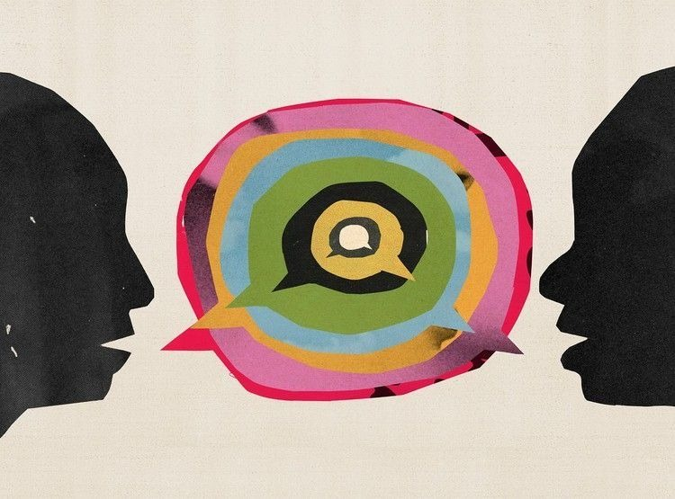

Psychotherapy

A clinical practice informed by the lens of psychoanalytic thought, and rooted in the uniqueness of one
Psychoanalysis
Unconscious
Psychoanalysis begins with a simple idea: the unconscious. We do not always know ourselves as fully as we imagine. We often think we are the masters of our own minds, but much of what we do is driven by thoughts and feelings just below the surface. These "unconscious" parts of us—fears, desires, and old memories—shape how we work and how we love. When you feel stuck or overwhelmed, it's usually not "nonsense." It is your inner world trying to tell you something that hasn't found the right words yet.
Early life
Our early lives create a "blueprint" for how we expect the world to work. We come to know ourselves through relationships, and our early experiences leave lasting traces in how we relate to others and to ourselves. We carry these old scripts into our adult lives, often viewing the present through the lens of the past. As a result, we may find ourselves repeating patterns or caught between conflicting feelings, such as wanting closeness while also pulling away from it.
Complexity
Psychoanalysis approaches the view of the human mind as also something that is layered and complex with contradictory thoughts, feelings and motives that can operate at the same time and guide our actions. We can love and resent the same person, or want success while fearing it. In this therapy, we don't try to "fix" these contradictions. We simply acknowledge that being human means having a layered, complex inner life.
"The point of psychoanalysis is not adaptation, but enlargement of life."
- Becoming Freud
What is Psychoanalytically-oriented Psychotherapy?
Psychoanalytically-oriented psychotherapy brings these ideas of psychoanalysis into practice. Rather than providing immediate solutions, it focuses on understanding one's experiences over time. It doesn't focus on quick fixes or behavior tips. It creates a dedicated space where your history, your emotions, and your unique way of seeing the world can unfold such as:
- Recurring Emotional Patterns: Understanding why the same situations seem to keep happening.
- Relational Histories: Exploring how your past experiences with others shape your present connections.
- Inner Conflicts: Honoring the "tug-of-war" between different parts of yourself.
- Lived Experience: Valuing your personal story exactly as you feel it, without judgment.
The Jigsaw Puzzle Without the Box
Imagine having a thousand puzzle pieces spread across a table, but the box—the "big picture"—is missing. You have a piece of a cloud and a fragment of a face, and they don't seem to fit. In therapy, we find the "edge pieces" together. You'll eventually see how a feeling you had this morning (the cloud) is shaped exactly like a memory from years ago (the tree). You aren't getting new pieces; you're finally seeing how the ones you've always had fit together.
Moving beyond "coping"
The goal of this work is not just to help you "get by," but to foster a deep, structural change in how you experience life. We often spend a great deal of energy trying to ignore or push away feelings that are uncomfortable. However, these "disavowed" feelings have a way of leaking out regardless, often causing us to work at cross-purposes with ourselves.
You might recognize this inner friction through thoughts like:
How Does Psychoanalytically-oriented Psychotherapy Work?
"We think we listen, but very rarely do we listen with real understanding, true empathy. Yet listening, of this very special kind, is one of the most potent forces for change that I know."
— Carl Rogers, A Way of Being
At its most basic level, this is "talk therapy," but it is not the kind of talking or listening we do in our everyday lives.